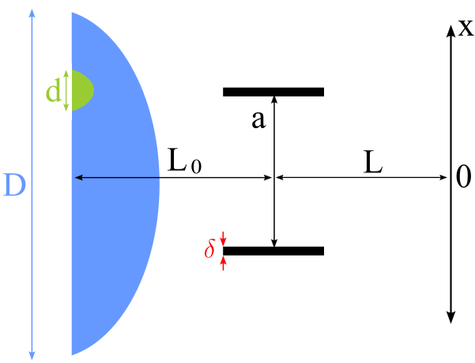

Estudiaremos la interferencia de un paquete de onda conformado por la mezcla de multiples funciones de onda al
pasar por dos rendijas, sin asumir que el paquete de ondas es originalmente coherente.
En la siguiente imagen hay un esquema sobre la situación analizada:

a es la distancia entre rendijas
δ es el ancho de las rendijas normalizado por su separación
d es el ancho de una función de onda
D es el ancho del colimador
Lo es la distancia desde la fuente a las rendijas
L y X describen los puntos del espacio después de las rendijas
A continuación hay botones que permiten ver los parámetros utilizados para algunos ejemplos típicos, por
ejemplo, luz que llega del Sol.
Si querés experimentar con tus propios valores, acá los podes introducir: